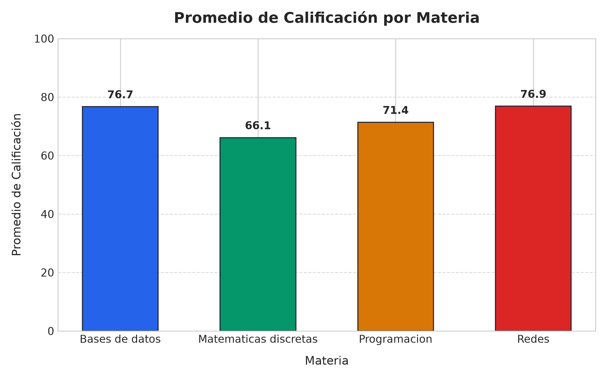
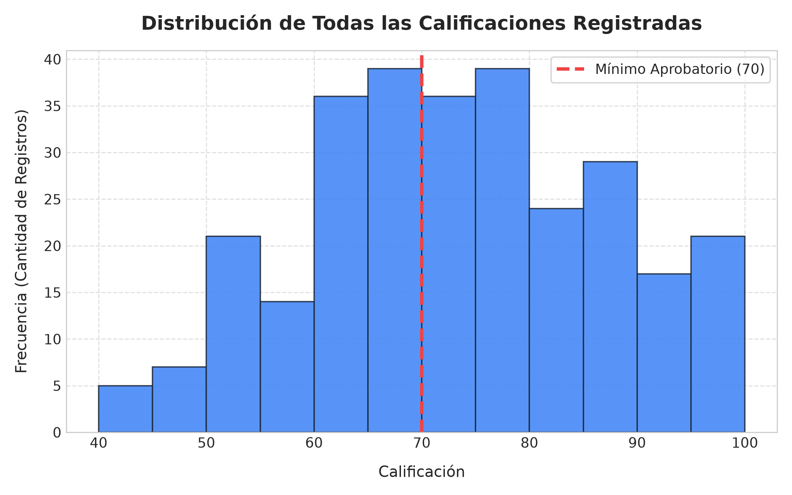
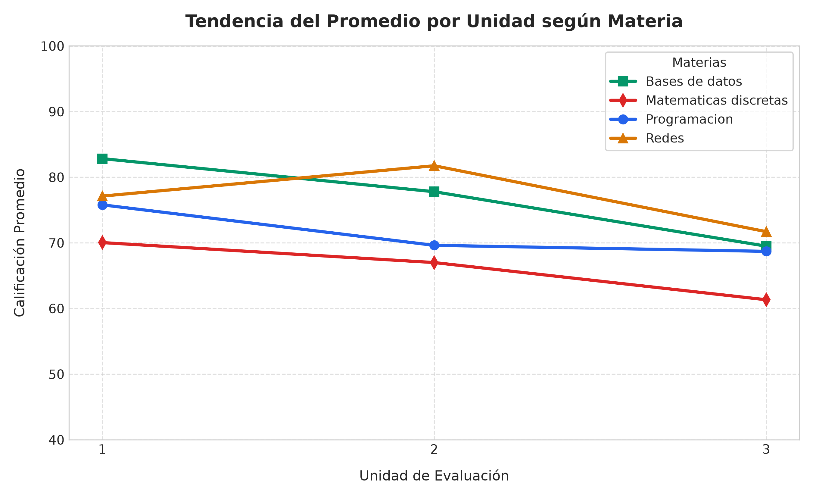

Análisis y Visualización de Calificaciones
Reporte de laboratorio interactivo y sistemático desarrollado con Python, Pandas y Matplotlib para el análisis de rendimiento académico en Ingeniería en Sistemas Computacionales.
Reporte de laboratorio interactivo y sistemático desarrollado con Python, Pandas y Matplotlib para el análisis de rendimiento académico en Ingeniería en Sistemas Computacionales.
Lectura del archivo calificaciones_isc.csv en un DataFrame de Pandas, inspección de sus primeras filas, dimensiones estructurales, tipos de datos y análisis estadístico descriptivo.
df.head())| Índice | Matrícula | Nombre del Alumno | Grupo | Materia | Unidad | Calificación | Asistencias |
|---|---|---|---|---|---|---|---|
| 0 | ISC240100 | Ana Lopez | Grupo A | Programacion | 1 | 55 | 5 |
| 1 | ISC240100 | Ana Lopez | Grupo A | Programacion | 2 | 54 | 5 |
| 2 | ISC240100 | Ana Lopez | Grupo A | Programacion | 3 | 50 | 8 |
| 3 | ISC240100 | Ana Lopez | Grupo A | Bases de datos | 1 | 88 | 8 |
| 4 | ISC240100 | Ana Lopez | Grupo A | Bases de datos | 2 | 78 | 8 |
df.dtypes)| Columna | Tipo Pandas | Naturaleza |
|---|---|---|
matricula | object / string | Identificador Categórico |
nombre | object / string | Texto Nominal |
grupo | object / string | Factor Categórico (A / B) |
materia | object / string | Factor Categórico (4 clases) |
unidad | int64 | Entero Discreto (1, 2, 3) |
calificacion | int64 | Cuantitativo (0 a 100) |
asistencias | int64 | Cuantitativo Discreto |
describe())| Métrica | Calificación | Asistencias |
|---|---|---|
| count (Muestra) | 288.0 | 288.0 |
| mean (Media) | 72.77 | 7.45 |
| std (Desv. Estándar) | 13.93 | 1.39 |
| min (Mínimo) | 40.0 | 5.0 |
| 25% (Q1) | 62.75 | 6.0 |
| 50% (Mediana) | 72.00 | 8.0 |
| 75% (Q3) | 82.25 | 8.0 |
| max (Máximo) | 100.0 | 10.0 |
Extracción de subconjuntos de datos aplicando máscaras booleanas vectorizadas sin alterar el DataFrame original df y contabilizando los registros de forma directa mediante len(), sin recurrir a ciclos prohibitivos.
Totalidad de alumnos pertenecientes al grupo A
✓ Coincide exactamente con: 12 alumnos × 12 evaluaciones = 144
Unidades reprobadas en cualquier materia
Representa el 42.36% de todas las unidades cursadas.
Excelente desempeño en BD en el segundo grupo
16 unidades cumplieron satisfactoriamente los 3 criterios lógicos.
| # | Matrícula | Nombre del Alumno | Materia | Unidad | Calificación | Asistencias |
|---|
situacion)
Construcción de la columna situacion en el DataFrame principal asignando "Aprobado" si la calificación es mayor o igual a 70, y "Reprobado" en caso contrario, utilizando la función vectorizada de alta velocidad np.where.
df["situacion"] = np.where(df["calificacion"] >= 70, "Aprobado", "Reprobado")
Unidades que acreditaron los criterios mínimos
Proporción: 57.64% de las 288 unidades
Unidades que requieren evaluación de regularización
Proporción: 42.36% de las 288 unidades
groupby)
Cálculo de los cinco resúmenes solicitados por la práctica y exportación limpia del archivo promedios_alumnos.csv preservando la matrícula y el nombre del estudiante con reset_index() y index=False.
| Grupo Académico | Bases de Datos | Matemáticas Discretas | Programación | Redes |
|---|---|---|---|---|
| Grupo A | 77.72 | 64.67 | 70.69 | 76.75 |
| Grupo B | 75.69 | 67.58 | 72.06 | 76.97 |
Exportado a promedios_alumnos.csv sin columna de índice adicional.
| Ranking | Matrícula | Nombre del Estudiante | Promedio General Ponderado | Estatus Académico |
|---|
Generación de las 3 figuras requeridas con títulos claros, nombres de ejes debidamente rotulados y almacenamiento en formato PNG de alta resolución (300 DPI) con plt.savefig() antes de plt.show().

Gráfico de barras verticales que compara el rendimiento promedio en las cuatro asignaturas.
ylim(0, 100)
Histograma de frecuencias que ilustra la concentración de calificaciones de los 288 registros.
axvline(70)
Gráfico de líneas continuas multiseries para evaluar la evolución del grupo hacia la unidad 3.
Respuesta a las tres preguntas analíticas planteadas por la práctica docente, contrastadas rigurosamente con los resultados numéricos obtenidos en los ejercicios 4 y 5.
Al analizar los promedios globales por asignatura, Matemáticas Discretas obtuvo el rendimiento más deficiente con una media de 66.12 puntos, situándose por debajo del mínimo aprobatorio de 70. En contraste, Redes lideró con 76.86 puntos y Bases de Datos con 76.71 puntos. Esto evidencia que el razonamiento formal, demostraciones y teoría de grafos representan el mayor cuello de botella cognitivo para esta generación.
Efectivamente. La progresión temporal por unidad revela una disminución continua en las calificaciones del grupo:
• Unidad 1: 76.45 puntos (Rendimiento óptimo).
• Unidad 2: 74.04 puntos (-2.41 pts vs U1).
• Unidad 3: 67.81 puntos (-8.64 pts vs U1 y -6.23 pts vs U2).
Esto confirma que hacia la tercera unidad el grupo sufre una caída generalizada, explicable por la acumulación de proyectos finales y mayor complejidad conceptual de los temarios.
Al calcular la media global de las 12 evaluaciones individuales por alumno (4 materias × 3 unidades), se identificó que exactamente 4 estudiantes no lograron superar el umbral de 70:
1. Sebastian Herrera (Matrícula ISC240123): 69.75 pts.
2. Luis Salas (Matrícula ISC240105): 68.92 pts.
3. Carlos Hernandez (Matrícula ISC240101): 68.83 pts.
4. Ricardo Reyes (Matrícula ISC240117): 68.00 pts.
Los 20 alumnos restantes (83.33%) concluyeron con promedio aprobatorio, encabezados por Ximena Gutierrez con 78.92 puntos.
practica_pandas.pyImplementación profesional sin bucles iterativos, documentada según estándares PEP 8, compatible con Python 3.10+ y Pandas 2.x/3.x.
Verificación explícita de todos los criterios de acreditación docente y validación de que se evitaron los errores comunes señalados en las especificaciones del laboratorio.
df["grupo"] = "A": Se utilizó la expresión de filtrado booleano df[df["grupo"] == "A"], preservando la integridad de todas las columnas.
savefig después de show: Se guardaron las tres figuras en disco antes de cualquier intento de visualización interactiva.
index=False al exportar: El archivo promedios_alumnos.csv se generó limpio sin la columna numérica del índice.
reset_index() tras el agrupamiento de Pandas para mantener matrícula y nombre como columnas reales.
for para conteo o cálculo: Se emplearon exclusivamente operaciones nativas de Pandas (len(), np.where, mean(), value_counts()).